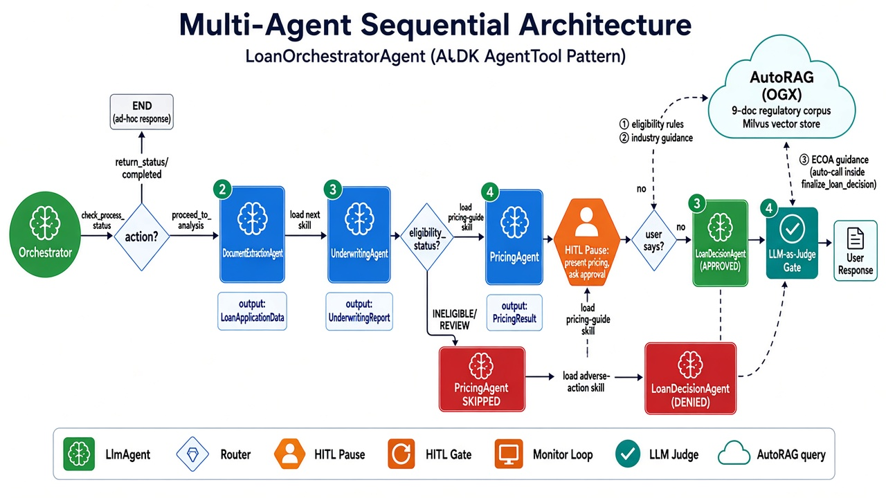
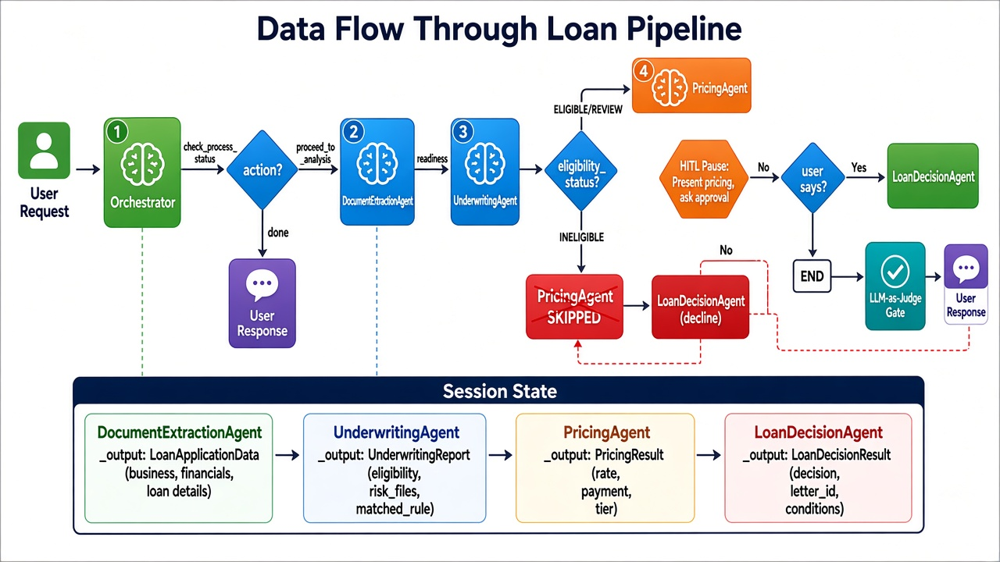
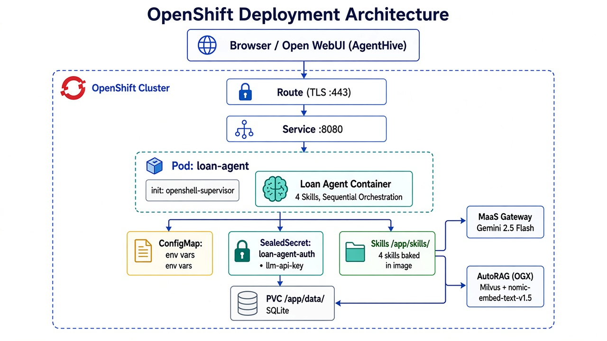

Multi-agent orchestration with Google ADK on OpenShift AI
Raghu Banda · Red Hat AI
A user submits a loan application. The agent reads it, checks SBA eligibility rules, calculates pricing, and either generates an approval letter or a compliant decline notice — with a human approving the final decision.
Each agent has one job with its own system prompt and Pydantic output schema. The underwriting agent doesn't know about pricing. The pricing agent doesn't know about decline letters.
Sub-agents only get the tools they need. The orchestrator can't accidentally call calculate_loan_pricing — only PricingAgent has it. No tool leakage between stages.
Each agent writes structured output to a session state key. You can test underwriting in isolation, swap out the pricing logic, or change the decline letter format without touching the other agents.
The orchestrator calls each sub-agent using ADK's AgentTool pattern — they look like regular tool calls to the LLM, but each one spins up a full agent with its own prompt and model context.

Four agents in sequence via ADK AgentTool. Eligible loans go through pricing + HITL approval. Ineligible loans auto-skip pricing and generate a compliant decline letter with regulatory guidance from AutoRAG.
retrieve_underwriting_context — one LLM tool call that internally makes 2 AutoRAG queries: eligibility rules + industry guidancefinalize_loan_decision — on the decline path, it internally calls retrieve_regulatory_guidance for ECOA adverse action requirementseligibility_rules.json| Hook | Callback | What it actually does |
|---|---|---|
| before_agent | extract_request_id |
Parses the loan ID (SBL-YYYY-XXXXX) from the user message. No ID? Agent asks for one instead of guessing. |
| before_tool | halt/skip guard |
Blocks tool execution if the process is halted, completed, or if pricing should be skipped for ineligible loans. |
| before_model | inject_document |
Injects the loan application PDF or image into the LLM request context — only for DocumentExtractionAgent. |
| after_agent | state_logging |
Persists every sub-agent's structured output to SQLite. Detects INELIGIBLE status and flags PricingAgent for skip. |
| after_agent | llm_judge_gate |
A second LLM call that checks trajectory, grounding, and completeness. If it fails, the response is blocked. |
The LLM-as-Judge validates every orchestrator response: Did the tools run in the right order? Do all numbers match the structured outputs? Is anything missing? If any check fails, the user sees a generic retry message — not a hallucinated answer.

Dual-write: every sub-agent writes to both ADK session state and SQLite.
check_process_status reloads completed steps from SQLite_load_step_data_from_db() loads prior outputs so the letter can be generated
Gemini 2.5 Flash via OpenAI-compatible endpoint through LiteLLM. Switch to Vertex AI or direct API key by changing env vars — no code changes.
9-doc regulatory corpus in Milvus + nomic-embed-text-v1.5. Queried 3 times per loan: 2 at underwriting, 1 at loan decision.
Optional — set MLFLOW_TRACKING_URI and every LLM call auto-logs as spans. Degrades gracefully if unavailable.
The orchestrator loads markdown files as "skills" using ADK's SkillToolset. These aren't hard-coded into prompts — the LLM decides when to load them based on context.
| Skill | When it's loaded | What it contains |
|---|---|---|
| loan-orchestration-protocol | Start of every new application | Step-by-step HITL workflow: extract → underwrite → price → approve/decline |
| loan-eligibility-guide | When explaining eligibility decisions | 5 SBA eligibility rules, risk flags, status definitions |
| loan-pricing-guide | After PricingAgent returns | Risk tier table (Tier 1–4), rate ranges, how to present pricing to the user |
| loan-adverse-action | Before generating a decline letter | ECOA requirements, decline letter template, tone and compliance guidance |
Only the orchestrator has access to skills. Sub-agents are locked down:
disallow_transfer_to_parent=True,disallow_transfer_to_peers=True. They can't load skills, can't call other agents, can't transfer control.
User: "Process this loan application for SBL-2026-10001: Acme Bakery, $150K loan, 5 years in business, $420K annual revenue..."
Behind the scenes:
check_process_status → load_skill("loan-orchestration-protocol") → DocumentExtractionAgent → UnderwritingAgent + 2 RAG queries → PricingAgent
Agent: "Application processed. Acme Bakery qualifies as Tier 2 (Moderate Risk). Proposed terms: 7.75% interest rate, $3,012.43/month over 60 months. Total interest: $30,745.80. Do you approve these terms?"
User: "Yes, approve it."
Behind the scenes:
check_process_status (may reload from SQLite) → LoanDecisionAgent → LLM-as-Judge → response
Agent: "Loan SBL-2026-10001 has been approved. Formal approval letter generated (ref: DL-2026-10001). The letter has been sent to the applicant at acme@example.com."
Multi-agent orchestration with regulatory RAG, human-in-the-loop approval, and resilient state management — built on Google ADK, running on OpenShift AI.
rbanda@redhat.com